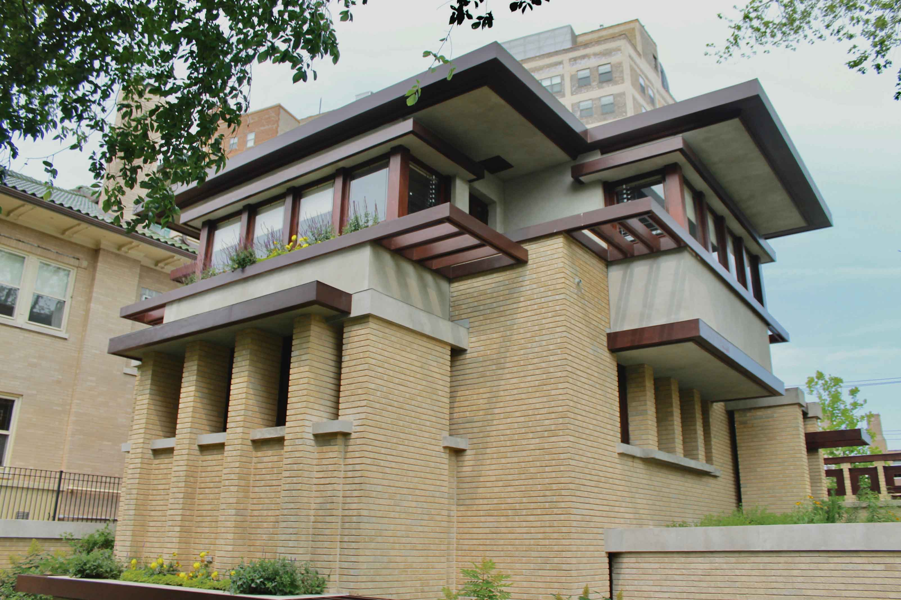
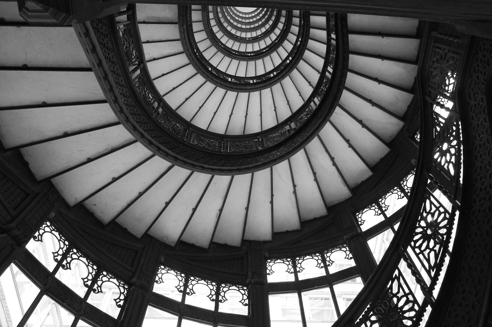

Emil Bach House - Chicago, IL
This is a description of the image to the left. It should be displayed nicely in the center of the picture. I have intentionally added an aboundance of text so that it will feel more balanced. The intention of this text is for design only and should be replaced after the design has been finished. This is a description of the image to the left. It should be displayed nicely in the center of the picture. I have intentionally added an aboundance of text so that it will feel more balanced. The intention of this text is for design only and should be replaced after the design has been finished.

Stairwell at the Rookery - Chicago, IL
This is a description of the image to the right. It should be displayed nicely in the center of the picture. I have intentionally added an aboundance of text so that it will feel more balanced. The intention of this text is for design only and should be replaced after the design has been finished. This is a description of the image to the right. It should be displayed nicely in the center of the picture. I have intentionally added an aboundance of text so that it will feel more balanced. The intention of this text is for design only and should be replaced after the design has been finished.

Sliced Building - Paris, France
This is a description of the image to the left. It should be displayed nicely in the center of the picture. I have intentionally added an aboundance of text so that it will feel more balanced. The intention of this text is for design only and should be replaced after the design has been finished. This is a description of the image to the left. It should be displayed nicely in the center of the picture. I have intentionally added an aboundance of text so that it will feel more balanced. The intention of this text is for design only and should be replaced after the design has been finished.

Musée D'Orsay - Paris, France
This is a description of the image to the right. It should be displayed nicely in the center of the picture. I have intentionally added an aboundance of text so that it will feel more balanced. The intention of this text is for design only and should be replaced after the design has been finished. This is a description of the image to the right. It should be displayed nicely in the center of the picture. I have intentionally added an aboundance of text so that it will feel more balanced. The intention of this text is for design only and should be replaced after the design has been finished.